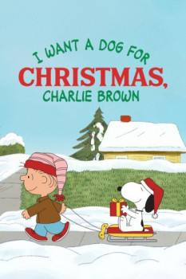

Country:United States, 41 minutes
Spoken languages:English
Genres:Animation, Comedy, Family
Director(s):Larry Leichliter, Bill Melendez
Writer(s):Charles M. Schulz
Video Codec:Unknown
Number: 6260

Certification:G
Storyline:
All Rerun wants from Santa is a dog, but his mother won't let him have one. Spending time with Snoopy provides the perfect pick-me-up. But when Snoopy gets too busy to play with Rerun, they call in a substitute—Snoopy's brother Spike.
Cast:
Jimmy Bennett (voice of Rerun Van Pelt), Adam Taylor Gordon (voice of Charlie Brown), Ashley Rose Orr (voice of Lucy Van Pelt), Corey Padnos (voice of Linus Van Pelt), Hannah Leigh (voice of Sally Brown)
Medium: Media file,
Location: D:\Charlie Brown Cartoons\I Want A Dog For Christmas, Charlie Brown.mp4
Loaned: No
Aspect ratio: Unknown